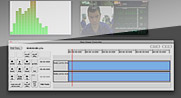
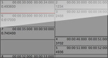

Introduction
OpenSHAPA is an open-source research tool that integrates and displays all kinds of data, letting you discover the big picture while remaining connected with raw data. OpenSHAPA will let you build and organise interpretations, and will assist with analysis.
Features
-
View Research Data
Integrate and visualise data from multiple sources - video, sound, and electronic data logs.
-
Reports
-
Plugins
-
Record Observations
Keyboard shortcuts let you navigate data quickly and iteratively, adding comments, codes, and interpretations.
-
Cross Platform
-
Open Source
-
 Analyse & Order
Analyse & OrderScript higher-order analyses and, as needed, export for statistical analysis.
-
Scripting
-
 Temporal Ordering
Temporal Ordering
Contribute
There are lots of ways you can join the community and contribute to the development of OpenSHAPA:
Advocate
Did you enjoy using OpenSHAPA to explore your data? Spread the word, by telling your friends and colleagues. (Well not just yet, when we go public).
Test
Live dangerously by grabbing the latest development snapshot and reporting any issues you find.
Document
Did it take you a while to figure something out, or was existing documentation out of date or wrong? Help others stand on your shoulders by improving documentation.
Extend
See the user guide on how to write scripts, create your own data viewer plugins and connect with the developers.